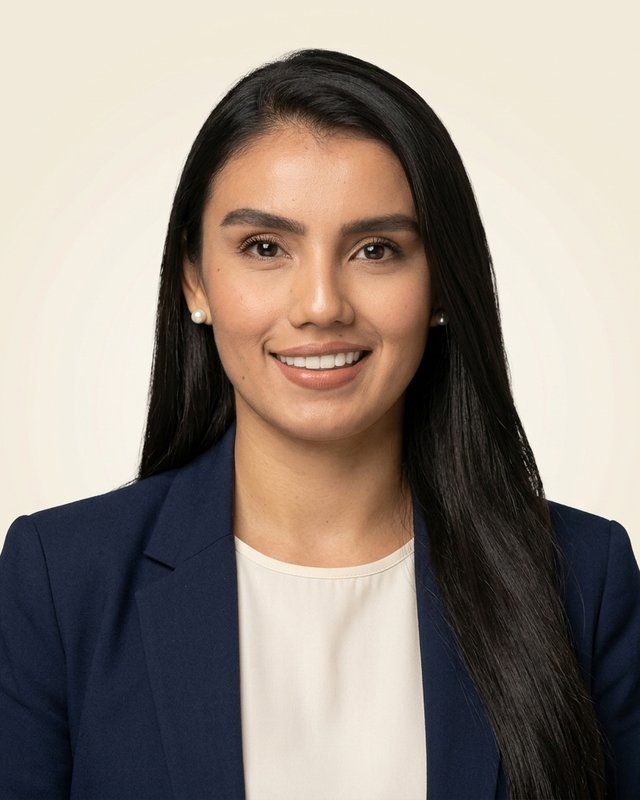

Quiero venderle al Estado y no sé por dónde empezar
Te explico cómo registrarte en SECOP II, cómo buscar procesos que sí puedes ganar y qué documentos necesitas tener listos antes de ofertar.
Descarga el checklist de 15 pasos →Abogada · Contratación pública
Soy Paula Gómez. Te enseño a venderle al Estado colombiano paso a paso, desde tu registro en SECOP II hasta lo que pasa después de firmar el contrato. Y si tienes un proceso entre manos, lo revisamos juntos.
Empieza aquí
Elige la opción que más se parece a ti y te digo por dónde empezar.
Te explico cómo registrarte en SECOP II, cómo buscar procesos que sí puedes ganar y qué documentos necesitas tener listos antes de ofertar.
Descarga el checklist de 15 pasos →Revisamos tu oferta y el pliego para encontrar el error: un requisito habilitante, una póliza, un formato mal diligenciado o un precio fuera de rango.
Ver asesorías →Informes, seguridad social, cuentas de cobro y obligaciones. Lo que nadie te explica antes de firmar, contado por alguien que lo vive.
Ver contenido para contratistas →Asesorías
Sesiones virtuales de 60 minutos para pequeños empresarios, emprendedores y personas naturales que quieren contratar con el Estado.
Tu cuenta en SECOP II, el Registro Único de Proponentes y cuándo lo necesitas.
Qué te piden de verdad, qué te deja por fuera y qué puedes observar a tiempo.
Documentos habilitantes, oferta económica, garantías y la lista de revisión final.
Cómo funcionan los Acuerdos Marco y las compras por catálogo.
Ejecución, informes, adiciones, pagos y liquidación del contrato.
Cámara de Comercio, RUT y lo que debes tener vigente para participar.
Te ayudo a preparar una oferta sólida. Nadie puede garantizarte que vas a ganar un proceso, y yo tampoco lo haré.

Sobre mí
Abogada y magíster en Derecho, con énfasis en derecho administrativo y ciencias políticas. Llevo cerca de cinco años trabajando en contratación estatal.
En ese tiempo he visto ofertas buenas quedar por fuera por un documento vencido o una casilla mal diligenciada. Creé este espacio para que eso no te pase: aquí te explico las reglas en el lenguaje de todos los días, con ejemplos de procesos públicos reales.
Aprende gratis
Videos cortos y guías para que entiendas un concepto a la vez. Sígueme en la red que más uses.
Tutoriales paso a paso: registro, búsqueda de procesos y cómo presentar tu oferta.
Acuerdos Marco, instrumentos de agregación de demanda y compras por catálogo.
RUP, CDP, adendas, pólizas, mínima cuantía. Sin tecnicismos.
La vida real del contrato de prestación de servicios.
Gratis
Un checklist en PDF para revisar antes de presentar. Te lo envío gratis por WhatsApp.
Escríbeme la palabra CHECKLIST y te lo envío en PDF. Es gratis.
Quiero el checklistTambién te cuento cuando salgan los cursos.
Próximamente: cursos para tu primer contrato con el Estado.
Pide el checklist y te aviso primeroPreguntas frecuentes
Sí. No necesitas tener una empresa grande. Muchas entidades compran a personas naturales y a pequeños negocios, sobre todo en procesos de mínima cuantía.
Nada. El registro como proveedor en SECOP II es gratuito. Lo que sí debes tener al día son tus documentos, como el RUT y, si eres empresa, el certificado de Cámara de Comercio.
Depende de la modalidad. Para mínima cuantía y contratación directa, por regla general, no se exige. Para licitación pública o selección abreviada, normalmente sí. Te lo explico con calma en una asesoría.
Sí. Son por videollamada, así que puedes estar en cualquier ciudad de Colombia.
No. Nadie puede garantizarlo. Lo que sí hacemos es preparar una oferta completa y sin errores evitables, que es lo que más pesa cuando se evalúa.
Escríbeme y miramos juntos si es para ti y qué necesitas para presentarte.